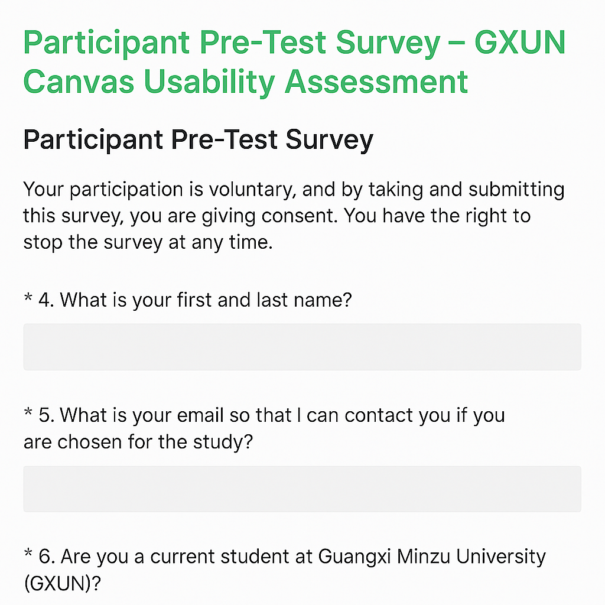
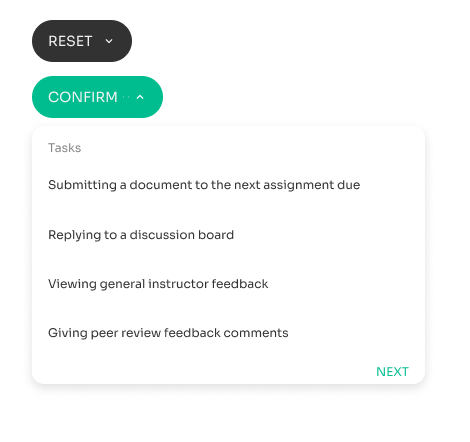
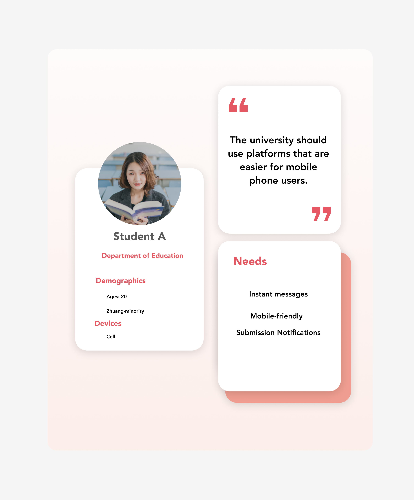

Online Learning Platform Usability Assessment
An online course usability research study involving diverse student users in order to create an accommodating learning environment.
👩🎓My role: lead UX researcher
Recognizing the needs of diverse students in online courses, I conducted an usability test on Guangxi Minzu University's online learning platform Canvas to give instructors the information they need to create a usable and accessible online course for all students.
Timeframe
Febuary 2017 - June 2017
UX Skills
- Usability testing
- User matrix
- Data collection and analysis
- Presentation of actionable Recommendations
Tools
- Survey Monkey
- Canvas
Team
Our research team was comprised of:
- Faculty of the School ofMedia and Communication, the School of Education, and the School of Computer Science
- Univerisity librarians
- Canvas product support team
- Department of undergraduate studies
- Univeristy IT team
- Administrative personnels
Challenge
Understand student pain points and give data-driven recommendations to instructors so they can create an accessible and usable classroom for all students.
As students moved online, it became increasingly important for instructors' course materials and designs in Canvas to be accessible and usable for all students. With so many diverse students who were struggling, it was clear that instructors needed to know their students' struggles to know how to revise their courses.
Usability Assessment Goals
- Understand student struggles and pain points with an online course..
- Gather and analyze qualitative and quantitative data to understand user issues.
- Provide actionable recommendations to instructors on how they can improve their courses.
The Solution
I conducted user and organizational research, created the usability test, recruited participants, administered usability testing, and analyzed data which quickly turned into actionable recommendations to stakeholders and designers.
User Group

Recruitment & User Research
After researching student demographics demographics, a user matrix was established based on the findings. After IRB (Institutional Review Board) approval, I found 11 users through my recruitment survey that fell within my provisional user matrix.

Usability Testing
Tasks determined how well users could complete English composition tasks and common course tasks with minimal instruction.


Results
The recommendations helped GXUN and instructors pinpoint where their students were struggling, which was the need for mechanical instructions in Canvas. It also shed light on the need for the university to provide training to instructors to support their journey on creating accessible and usable courses for their students.


Instructors
- Mechanical instructions for completing assignments in Canvas.
- Instrutional variety needed to accommodate all learner types (video, illustration/visual, written, spoken).
- Communal instructions for the department needed to support all instructors.
Univerisity
- Technical communication and diversity training needed for instructors.
- Canvas tutorial needed for all incoming students.
- Communal instructions for all instructors.